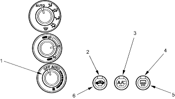
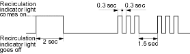

Climate Control
General Troubleshooting Information
|
21-104 |
|
How to Retrieve a DTC
The Climate Control Unit has a self-diagnosis function.
Running the Self-diagnosis Function
- Turn the fan switch OFF.
- Press the recirculation control switch and the rear window defogger switch.
- While holding the both switches down, turn the ignition switch ON (II), then release the both switches. The recirculation indicator light and the rear window defogger indicator light come on. The recirculation indicator light goes off 2 seconds later and the A/C indicator light comes on (if so equipped), then the self-diagnosis will begin. About 10 seconds later, the self-diagnosis will finish and the A/C indicator light goes off. The recirculation indicator light will blink the Diagnostic Trouble Code (DTC) to indicate a faulty component. If no DTC's are found, the indicator light will not blink.
NOTE: LHD type is shown, RHD type is symmetrical.
 |
- FAN SWITCH
- RECIRCULATION INDICATOR LIGHT
- A/C INDICATOR LIGHT
- REAR WINDOW DEFOGGER INDICATOR LIGHT
- REAR WINDOW DEFOGGER SWITCH
- RECIRCULATION CONTROL SWITCH
|
Example of DTC indication Pattern (DTC 3)

Resetting the Self-diagnosis Function
Turn the ignition switch OFF to cancel the self-diagnosis function. After completing repair work, run the self-diagnosis function again to make sure that there are no other malfunctions.